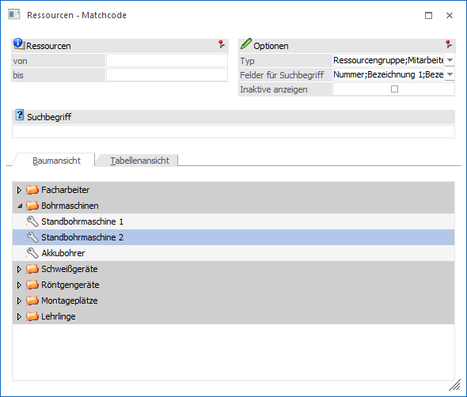
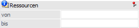
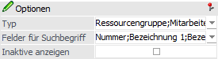
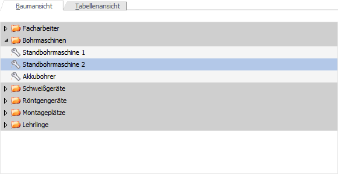
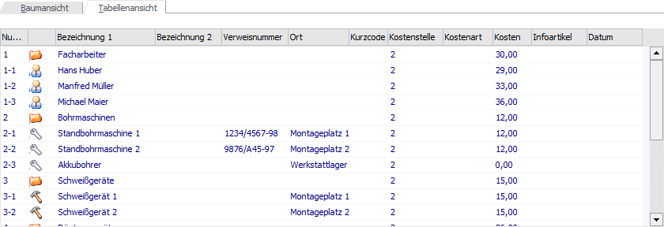
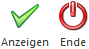

Wenn der Fokus in dem Feld "Ressource" oder "Ressourcengruppe" liegt und das Lupen-Symbol bzw. die Taste F9 gedrückt wird, dann öffnet sich das Programm "Ressourcen - Matchcode". An dieser Stelle kann gezielt nach Ressourcen der WinLine PPS gesucht werden.
Hinweis
Wenn in dem Feld "Ressource" bzw. "Ressourcengruppe" ein Teil des Suchbegriffs eingetragen wurde und die Taste F9 gedrückt wird, dann wird diese Eingabe übernommen und die Suche direkt gestartet.

Ressourcen

Ø Ressourcen von / bis
An dieser Stelle kann eine Vorabselektion der Ressourcen vorgenommen werden, welche benutzerspezifisch gespeichert wird.
Optionen

In diesem Bereich können weitere Einstellungen für die Suche vorgenommen werden, wobei diese benutzerspezifisch gespeichert werden.
Ø Typ
Mit Hilfe einer Mehrfachauswahl kann entscheiden werden, welche Ressourcen-Typen angezeigt werden sollen. Folgende Typen steht zur Verfügung:
ü Ressourcengruppe
ü Mitarbeiter
ü Maschinen
ü Werkzeuge
ü Prüfmittel
Ø Felder für Suchbegriff
An dieser Stelle kann hinterlegt werden, in welchen Felder nach dem Suchbegriff gesucht werden soll. Zur Auswahl stehen:
ü Nummer
ü Bezeichnung 1
ü Bezeichnung 2
ü Verweisnummer
ü Ort
Ø Inaktive anzeigen
Wird die Option "Inaktive anzeigen" aktiviert, dann werden auch die Ressourcen angezeigt, die auf Inaktiv gesetzt wurden.
Suchbegriff

Ø Suchbegriff
Die Auswahl kann durch die Eingabe eines Suchbegriffs eingeschränkt werden. Die Suche erfolgt in den Felder, welche über die Option "Felder für Suchbegriff" angegeben wurden.
Suchergebnis
Nach Auslösen der Suche (Button "Anzeigen" oder Suchbegriff bestätigen) werden die gefundenen Ressourcen in Form einer Baumansicht oder einer Tabellenansicht angezeigt (abhängig vom gewählten Register).
ü Register "Baumansicht"

ü Register "Tabellenansicht"

Buttons

Ø Anzeigen
Durch Anwahl des Buttons "Anzeigen" bzw. der Taste F5 wird die Suche gestartet.
Hinweis
Durch Bestätigung der Eingabe im Feld "Suchbegriff" wird die Suche ebenfalls gestartet.
Ø Ende
Durch Anwahl des Buttons "Ende" bzw. der Taste ESC wird das Fenster geschlossen.